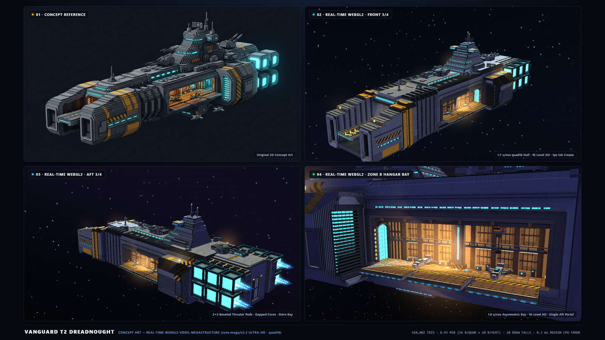
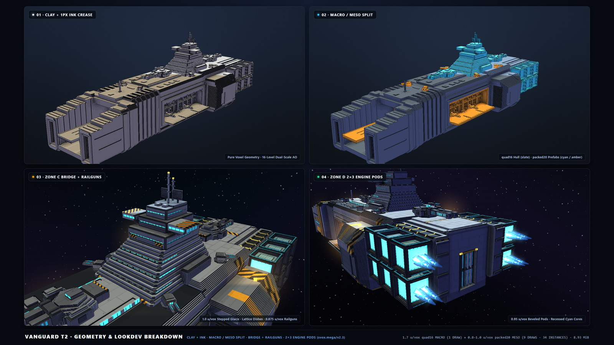
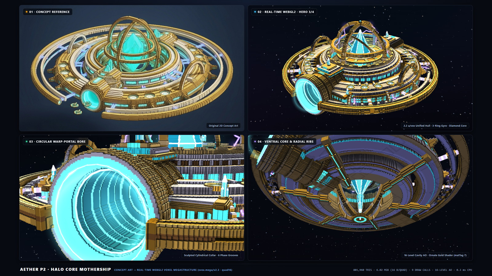
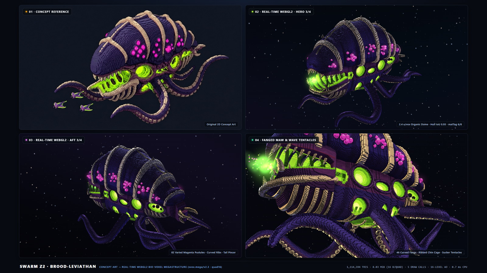

Ultra-HD capital ships: quad16 instanced quads, a 12 MiB hero budget & three faction flagships
The Megastructure / Capital Ship track gets a new svox.mega/v2.3 format and is proven end-to-end on three ~1000 u hero capitals, from 2D concept art to a real-time WebGL2 engine. This is a checkpoint release: the numbers below are measured, and the open items are listed at the end.
Concept reference → real-time WebGL2




Each sheet: panel 01 is the original 2D concept art, panels 02–04 are live WebGL2 frames. Click a sheet to open it at full resolution.
What improved · v2.0 → v2.2 → v2.3
| Pipeline | v2.0 | v2.2 | v2.3 |
|---|---|---|---|
| Macro geometry | MEGA_V2 48 B/vert + Uint32 | packed20 20 B/vert + Uint16 = 92 B/quad | quad16 16 B/quad, no index buffer |
| Vertex cap per part | — | 65,535 (split hulls into regions) | none |
| Curved hull size | — | 2,870 KiB | 567 KiB (5.06×–5.75×) |
| G6 budget | 4.0 MB · 12 draws · 120k tris · Δ < 1.0 ms | 4 MiB · 12 draws · 288k tris · Δ ≤ 1.5 ms | 12 MiB · 16 draws · 1.2M tris · Δ ≤ 2.5 ms |
| Macro cavity AO | dual-scale (micro + macro) | 2–6 levels (byte-bound) | 16 levels on every hero (up to 256) |
| G5 concept diff | Silhouette IoU | + Edge F1 / chamfer + amber / cyan band | + Hull-Only IoU ≥ 0.86 |
| Shading | Shader micro detail | 70/30 visual-rest hard surface | Faction-scoped matTag 6/7/8 |
| Kit self-test | 39/39 | 55/55 | 69/69 |
Per-ship before → after
Vanguard T2 Dreadnought
Terran hard-surface carrier- Triangles
178k→ 410,002- Macro voxel
2.5→ 1.7 u/vox- Macro AO
6→ 16 levels- G5 ortho Edge F1
0.541 FAIL→ 0.560 PASS- Hangars
Y-symmetric compromise→ true asymmetric 1.0 u/vox port / starboard bays, single aft cyan portal- Engines
- 0.95 u/vox beveled 2×3 thruster pods with 4 u gaps
8.93 MiB · 10 draws · Δ 0.79 ms · 0.3 ms CPU
Aether P2 Halo Core Mothership
Aether gold-ivory temple ship- Triangles
284k→ 801,960- Macro AO
2→ 16 levels- Hull
- Unified 2.2 u/vox
quad16, 0 sector seams - G5 hero
- IoU 0.880 · Edge F1 0.674 PASS
- Features
- True circular cylindrical warp portal (6 phase grooves) · 8-faceted elongated diamond crystal (
rotateBob) · 3 intersecting golden gyro rings (rotate) ·matTag 7gold-ivory temple shader
6.02 MiB · 9 draws · 0.3 ms CPU
Swarm Z2 Brood-Leviathan
Swarm bio-organic leviathan- Triangles
188k→ 1,114,594- Macro voxel
5.0→ 2.4 u/vox- Macro AO
4→ 16 levels- Hull-Only IoU (T / S / F)
0.68 / 0.59 / 0.69→ 0.880 / 0.925 / 0.934 ALL PASS- Features
- Curved dome carapace · ivory U-mandible & ribbed chin cage · 46 curved fangs · 82 magenta bio-sac nodules · sucker-lined Catmull-Rom wave tentacles (2.5 u/vox) ·
matTag 6/8organic chitin & bio-cavity shaders
8.03 MiB · 5 draws · 0.7 ms CPU
Technical highlights
svox.mega/v2.3quad16: every greedy quad is one 16-byte instance of a shared unit quad, onedrawElementsInstancedper part. No index buffer, no 65,535-vertex cap, 5.06×–5.75× smaller than v2.2 on curved hulls, triangle-for-triangle identical to the v2.2 mesherMEGA_V23_BUDGEThero budget: 12 MiB · 16 draws · 1.2M triangles · Δ ≤ 2.5 ms, so voxel scale, AO levels and dome curvature no longer have to be traded away- Faction-scoped shaders:
matTag 6organic chitin,7ornate gold & ivory temple,8bio-luminescent cavity. The hangar bounce light stays Vanguard-only - Hull-Only G5 gate (
computeHullSilhouetteIoU): scores a tentacled carapace independently of how its appendages curl - Zero-dependency Node kit self-test:
69/69checks (39 v2.0 + 16 v2.2 + 14 v2.3)
Checkpoint notes · honest remaining improvements
- Aether P2 ortho IoU (
0.799 / 0.688 / 0.730) still trails the 0.85 target, held back by the fixedr = 78launch-bore constraint - Swarm Z2: the perspective hero tentacle pose differs from the ortho pose, and the Clay view shows dense contour lines on fine curved steps
- Vanguard T2: the Zone C railgun framing in the breakdown sheet needs another pass, and the Side view alone scores Edge F1
0.538(the ortho average0.560passes) - Low-spec / mobile LOD and progressive streaming are planned after the visual craft passes